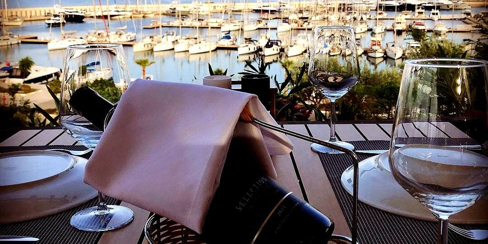

Marina Manzarası
Didim Marina atmosferinde günün her saatine uygun sakin, şık ve davetkâr bir ortam.

Didim Marina
Görkemli deniz manzaramız eşliğinde, Ege’nin sakinliğini ve sofranın keyfini bir araya getiriyoruz.
Özenle hazırlanan lezzetlerimizle günün her anını keyfe dönüştüren, rafine ve huzurlu bir deneyim sunuyoruz.
With a stunning sea view, we bring together the calm spirit of the Aegean and the pleasure of the table.
Thoughtfully prepared dishes create a refined and peaceful experience from breakfast to dinner.
Hakkımızda / About
Key-f Restaurant & Cafe, Didim Marina’da deniz manzarası eşliğinde kahvaltıdan akşam yemeğine uzanan rafine ama samimi bir deneyim sunar. Menümüzde kahvaltılar, paylaşım tabakları, deniz ürünleri, seçkin ana yemekler, kokteyller ve şaraplar öne çıkar.
Located in Didim Marina, Key-f Restaurant & Cafe offers a refined yet welcoming experience from breakfast to dinner with a beautiful sea view. Our menu highlights breakfast, sharing plates, seafood, signature main dishes, cocktails and wine.
Öne Çıkanlar / Highlights
Didim Marina atmosferinde günün her saatine uygun sakin, şık ve davetkâr bir ortam.
Kahvaltıdan akşam yemeğine uzanan, özenli ve dengeli bir yeme-içme deneyimi.
WhatsApp üzerinden hızlı iletişim ve pratik rezervasyon imkânı.
Rezervasyon / Reservation
WhatsApp üzerinden tarih, saat ve kişi sayısını yazarak hızlıca rezervasyon talebi gönderebilirsiniz.
Send your preferred date, time and number of guests via WhatsApp for a quick reservation request.